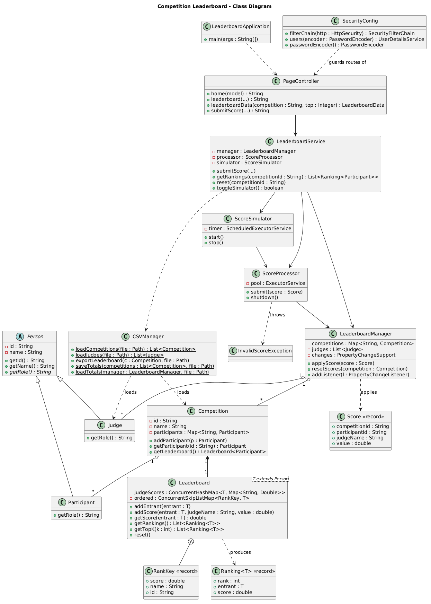

| Group | 28 |
|---|---|
| Members | Aayush Rastogi (2023B2A30888H) · Shaan Sharma (2023B1AD0949H) |
| Problem track | 3 — Problem Solving with Algorithms and Data Structures |
| Code repository | https://github.com/thegreatflash/oop-project-group28 |
During multi-stage festival competitions (dance, debate, quiz), judges enter scores concurrently from tablets. The existing platform updates its leaderboard by recalculating every rank from scratch on each incoming score — an O(n log n) full re-sort — which causes visible lag exactly when load peaks (finals, several judges submitting at once). Our module replaces this with a thread-safe ranking engine whose cost per update is O(log n), plus a web interface for judges, participants, and administrators.
data/participants.csv — competitionId, competitionName,
participantId, participantName (produced by the event-management module).data/judges.csv — judgeId, judgeName.(competitionId, participantId, judgeName, value)
arriving concurrently from the Judge web page or the built-in load simulator.data/<competition>_leaderboard.csv — exported standings for
the festival backend.data/saved_scores.csv — every judge's individual score, written on
shutdown and restored on start (crash/restart recovery).As scoped for 2–3 weeks, the simulation runs 3 competitions × 20 participants with 3 judges. The engine itself is size-independent — the data structures and concurrency design are the deliverable, and the simulator can drive continuous load to demonstrate behaviour under concurrency.
The application is a single Spring Boot process organised in four packages
with a strict direction of dependency (web → core/io → model). The engine
(model, core, io) is plain Java with no
framework imports, so it is testable and reusable outside the web layer.
| Package | Classes | Responsibility |
|---|---|---|
model | Person (abstract), Participant, Judge, Competition, Score (record) | Domain objects; inheritance hierarchy and immutable score value. |
core | Leaderboard<T extends Person>, LeaderboardManager, ScoreProcessor, ScoreSimulator, Ranking<T> (record), InvalidScoreException | Ranking engine, concurrency, validation, observer notifications, load simulation. |
io | CSVManager | All file exchange: load participants/judges, export standings, save/restore judge scores. |
web | LeaderboardService, PageController, SecurityConfig | Spring layer: pages (Thymeleaf), JSON refresh endpoint, role-based access control. |
ScoreProcessor.submit() validates on the caller's thread —
out-of-range or non-integer values throw InvalidScoreException
immediately, so the judge sees the error at once.ExecutorService
(producer–consumer: the pool's queue is the buffer).Leaderboard.addScore() stores the judge's value and repositions
that one participant in the ordered index — O(log n).LeaderboardManager fires a PropertyChangeEvent
(observer pattern); the browser picks up the new standings on its next poll.Two structures cooperate inside Leaderboard<T extends Person>:
ConcurrentHashMap<T, Map<String, Double>> —
participant → (judge → latest score). Holds the authoritative scoring data.ConcurrentSkipListMap<RankKey, T> — the live
ranking index, keyed by (score desc, name, id). The id makes keys
unique even for equal names and scores.A score update removes the participant's old key and inserts the new one —
two O(log n) operations. Reading the standings is a walk of the
already-ordered map (no sorting on the read path), and getTopK(k)
returns the first k entries in O(k).
| Operation | Naive design | This design |
|---|---|---|
| Score update | O(n log n) full re-sort | O(log n) reposition |
| Ranking refresh | Full recomputation | Walk of ordered index |
| Top-K retrieval | Sort then slice | O(k) prefix read |
| Concurrent updates | Global lock, writers serialise | Per-participant locking, parallel across participants |
Every update runs inside ConcurrentHashMap.compute(), which
locks only that participant's entry. Two judges scoring the same
participant are applied strictly one after the other — so the skip-list
reposition can never leave a stale key — while judges scoring different
participants proceed fully in parallel. There is no synchronized
block and no global lock anywhere; readers (the standings walk) never block
writers. Spring Boot's request threads plus the 3-worker pool mean submissions
genuinely arrive concurrently, which is exactly what the stress tests exercise.
Spring Security provides form login with three roles backed by an in-memory user store (passwords BCrypt-hashed):
| Accounts | Role | Access |
|---|---|---|
| participant1–3 / 1234 | PARTICIPANT | Home, live leaderboard |
| judge1–3 / 1234 | JUDGE | + Judge page (submit scores) |
| admin / 1234 | ADMIN | + Admin page (reset, export, simulator) |
URL rules live in SecurityConfig (/judge/** requires
JUDGE or ADMIN, /admin/** requires ADMIN). Unauthorised access
returns 403.
Each feature below corresponds to a unit of the CS F213 syllabus — the collections framework, multithreading and concurrency, generics, exception handling, file I/O, lambda expressions, and design patterns, as covered in the course lectures and handout.
| Feature | Where and why |
|---|---|
| Collections framework & concurrent collections | ConcurrentHashMap (scores, competitions),
ConcurrentSkipListMap (ordered ranking index) — lock-free reads,
fine-grained locked writes; plus List/Map throughout. |
| Multithreading | Fixed-pool ExecutorService for score processing;
ScheduledExecutorService driving the simulator;
CountDownLatch in the concurrency tests; atomic
compute() updates. |
| Generics | Leaderboard<T extends Person> and
Ranking<T> — bounded type parameter lets the same engine rank
any person type without casting. |
| Exception handling | Custom checked InvalidScoreException; validation before
queueing so a bad input can never corrupt shared state; graceful handling of
malformed CSV rows. |
| File I/O | java.nio.file in CSVManager: load, export,
save/restore across restarts. |
| Records & immutability | Score, Ranking, RankKey — immutable
data passed safely between threads. |
| Lambdas & method references | Executor tasks, compute() remapping functions, comparators,
stream mapping in the JSON endpoint. |
| Design patterns | Observer (PropertyChangeSupport in
LeaderboardManager), Producer–Consumer (submission pipeline), MVC
(Spring controller/service/templates), dependency injection. |
| Framework: Spring Boot + Spring Security | Embedded web server, Thymeleaf templating, role-based access control, BCrypt password hashing. |
Integration is file-based (one of the modes permitted by the specification):
the module consumes CSVs that the event-management/registration modules would
produce, and emits CSVs the dashboard and analytics modules can ingest. The
JSON endpoint (/api/leaderboard?competition=<id>[&top=k])
additionally provides a REST-style read interface that a mobile app could poll.
Swapping CSV exchange for REST or JDBC would only touch CSVManager
and the service layer — the engine is unaware of the transport.
mvn test runs 20 JUnit 5 tests, all passing:
| Test class | Coverage |
|---|---|
| LeaderboardTest (8) | Average-of-judges scoring, same-judge replacement, rank ordering and overtaking, Top-K, ties by name, reset keeping participants, bounds never exceeding 100. |
| ScoreProcessorTest (5) | Rejection of negative, >100 and non-integer scores; boundary values 0 and 100 accepted; rejected scores leave the board untouched. |
| ConcurrentSubmissionTest (3) | Hundreds of submissions from up to 8 threads: no lost updates through the processor pipeline; skip-list index stays consistent (each participant exactly once, correct order) under concurrent repositioning. |
| CSVManagerTest (4) | Loading with comment/blank/malformed rows, judge loading, export format and rank order, save→restart→restore round trip. |
Full source, unit tests, sample data, UML and this report: https://github.com/thegreatflash/oop-project-group28. Requires JDK 21+; Maven is not needed (the bundled wrapper downloads it).
git clone https://github.com/thegreatflash/oop-project-group28 cd oop-project-group28 ./mvnw spring-boot:run # then open http://localhost:8080 ./mvnw test # run the 20 unit tests
Run from the project root so the data/ folder is found, and sign
in with the accounts from section 4 (e.g. admin / 1234).
To run with no local setup: repository page →
Code → Codespaces → Create codespace on main, then the
same commands in its terminal (open forwarded port 8080). To demonstrate the
simulated integration environment, start the simulator from the Admin page and
watch the leaderboard reorder; exports land in data/ as CSV. Full
step-by-step detail is in HOW_TO_RUN.md in the repository.
| Member | Modules / responsibility |
|---|---|
| Aayush Rastogi (2023B2A30888H) | Domain model and core ranking
engine: the Leaderboard skip-list design and scoring rules,
ScoreProcessor thread pool and validation, observer wiring in
LeaderboardManager; Home, Leaderboard and Judge pages with the
auto-refresh script; concurrency and ranking unit tests. |
| Shaan Sharma (2023B1AD0949H) | Security module
(SecurityConfig, roles, login page) and UI theme; Admin module
with reset/export and the load simulator; CSVManager file
integration and restart persistence; CSV and score-validation unit tests;
report and demo preparation. |
